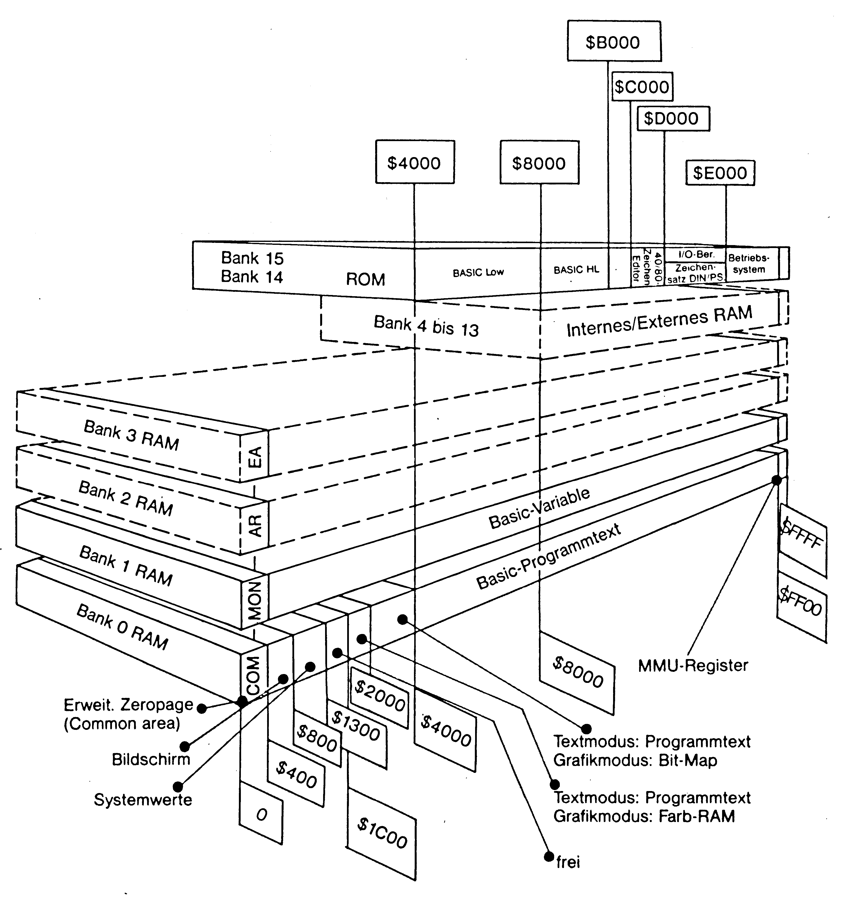
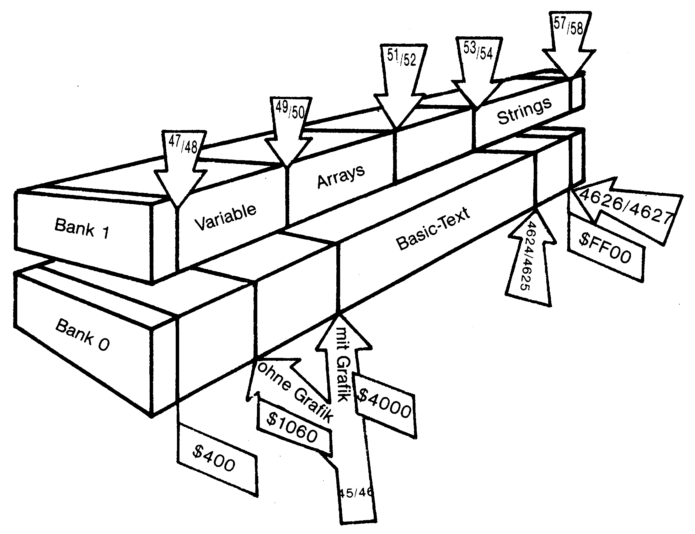
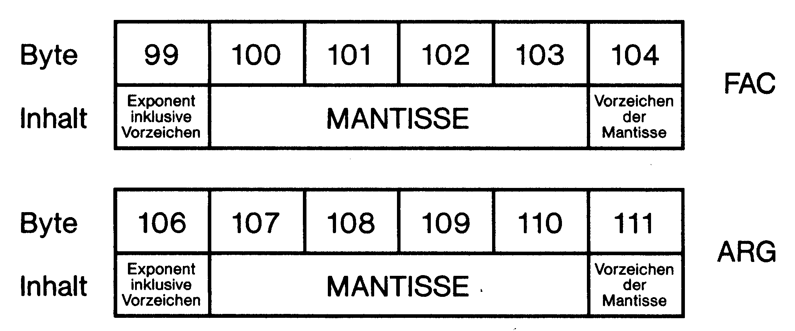

Die Zeropage-Straße des C 128
Die Zeropage ist einer der wichtigsten Bereiche in unserem Computer. Dort laufen die meisten Operationen ab und liegen viele Betriebssystem-Vektoren. Hier erhalten Sie eine Übersicht über die Funktion der ersten 256 Adressen des Computer-Speichers.
Dort, wo die viele tausend Adressen umfassende Speicherstraße unseres C 128 beginnt, gewissermaßen im ältesten Teil dieser Straße, heißt sie »Zeropage«. Die Erklärung dieses Namens liegt darin, daß man eine Anzahl von 256 Häusern (Adressen) eine Page (zu deutsch: Seite) nennt und daß es sich hier um die »nullten« 256 Adressen (in Computerkreisen fängt man immer bei Null an zu zählen) unserer Speicherstraße dreht. Das englische Wort für Null ist »Zero«, daher also Zeropage.
Jedes Haus in der Zeropage-Straße ist einmalig und man kann durchaus behaupten, daß auch nur der Ausfall eines einzigen leicht zur Desorganisation unserer ganzen Speicherstadt C 128 führen kann. Als unsere Speicherstadt gegründet wurde, hieß sie KIM 1 und war ein kleines Dorf, einfach aufgebaut und überschaubar. Von Computergeneration zu Computergeneration wurde sie komplexer und eleganter. Bald reichten die 256 Häuser der Zeropage-Straße nicht mehr aus und es kamen immer neue dazu. So wurde die Zeropage-Straße um viele hundert Adressen verlängert. Im neueren Teil nennt man sie nun allgemein »Erweiterte Zeropage«. Es kam immer wieder vor, daß einige Bewohner der Häuser, die bestimmte Aufgaben wahrzunehmen haben, umgezogen oder gar weggezogen sind. Andere – ziemlich viele – sind neu dazugekommen. Zwar verfügen die Verwaltungen unserer Speicherstadt (in den Stadtteilen Basic-Interpreter oder Betriebssystem etc.) über alle aktuellen Angaben, die sie zum reibungslosen Verkehr mit den Einrichtungen der Zeropage Straße benötigen – sonst wäre ja das Funktionieren unseres Gemeinwesens nicht gewährleistet – andererseits ist es aber wünschenswert, daß auch Ortsfremde sich der vielen Möglichkeiten dieses wichtigen Teiles unserer Stadt fachkundig bedienen können.
Orientierung
Damit haben wir auch einen Schwachpunkt unserer Computerstadt angesprochen: Fachkundig! Nur allzu leicht passiert es, daß Unkundige fehlerhaft die Einrichtungen unserer wichtigsten Straße benutzen. Die Folgen waren oft gravierend und konnten nur durch einen Neustart behoben werden! Aus diesem Grund wird hiermit der Führer durch die Zeropage und die erweiterte Zeropage vorgestellt, der die wichtigsten Adressen und ihre Benutzung erläutert.
Bevor wir aber die Zeropage-Straße beschreiben, sollten Sie auch noch wissen, wie unsere Speicherstadt aussieht und wo diese Straße überhaupt zu finden ist. Im Bild 1 sehen Sie eine Gesamtansicht der C 128-Stadt:

Deutlich ist zu sehen, daß es sich hier um eine erweiterte Zeropage handelt, das heißt, daß mehr als 256 Adressen dazu zählen
Darin erkennen Sie, daß die Speicherstadt aus mehreren Ebenen besteht, deren untere BANK 0 genannt wird. Darüber befindet sich BANK 1. BANK 2 bis BANK 13 sind sozusagen vorbereitet für den weiteren Ausbau unserer Stadt. In den BANKs 14 und 15 befindet sich die Verwaltung des gesamten Gemeinwesens. Alle Ebenen dieser Stadt haben einen Bereich gemeinsam, der COMMON AREA genannt wird, was etwa »Gemeinsamer Bereich« bedeutet. Gleichgültig in welcher Ebene der Stadt Sie sich gerade befinden, wenn Sie nur weit genug die Straße hinuntergehen bis zu den niedrigen Hausnummern, Sie landen unweigerlich ab Adresse $0400 (und kleiner) in dieser Common Area. Noch eine interessante Eigenschaft der Ebenen 14 und 15. Deren niedrigste Hausnummer ist nämlich $4000. Unterhalb dieser Hausnummer befinden Sie sich plötzlich wieder in BANK 0. Daher gibt es für den Neuling in unserer Stadt ein recht einfaches Rezept, die Zeropage-Straße und ihre Verlängerung zu finden: Einfach zu den Hausnummern unter $0400 gehen! Wir werden später noch erkennen, daß die Straße der erweiterten Zeropage sogar noch Hausnummern enthält, die größer als $0400 sind. Um diese zu finden, muß der Besucher dann am besten mittels des Befehls BANK 0 in die untere Etage gehen (BANK 15 und BANK 14 sind aber – wegen der eben erklärten Eigenart dieser Stadtteile – auch erlaubt).
Die beiden ersten Häuser
Noch eine technische Bemerkung: Es ist an dieser Stelle natürlich nicht möglich, wirklich jedes Haus dieser Straße mit gleicher Aufmerksamkeit vorzustellen. Einige sind in der Beschreibung sogar weggelassen worden. Einige andere enthalten lediglich den Hinweis auf einen anderen Führer, den Sie in diesem Heft vollständig abgedruckt finden: »Memory Map mit Wandervorschlägen« von Dr. H. Hauck. Jener hatte die C 64-Stadt beschrieben, aus der dann unsere Stadt entstand. Überall dort also, wo die einzelnen Häuser noch dieselbe Funktion wie damals haben, finden Sie einen Verweis auf das Werk dieses exzellenten Kenners jener Stadt.
Sie werden sich erinnern: Man fängt bei Null an zu zählen. Daher haben die beiden ersten Häuser der Zeropage-Straße die Nummern 0 und 1. Beide haben Namen und in ihnen werden bestimmte – gleich noch zu beschreibende – Arbeiten geleistet:
| Adresse | Name | Aufgabe |
|---|---|---|
| 00 | D8502 | 8502 Datenrichtungsregister |
| 01 | R8502 | 8502 Datenregister |
Jedes dieser Häuser (Bytes) besteht aus 8 Zimmern (Bits), deren Inhalt bedeutend ist für einige Computerfunktionen. Die Zuordnung der Aufgaben auf die Zimmer ist in beiden Adressen identisch, lediglich die Bedeutung des Inhaltes ist unterschiedlich. In Register 00 entscheidet dieser Inhalt nur darüber, ob eine Leitung auf Ausgang (dann ist das Bit = 1) oder Eingang (dann ist es 0) geschaltet wird. In Adresse 01 haben die Zimmer folgende Funktion:
| Bit | Funktion | |
|---|---|---|
| 7 | unbenutzt, steht auf 0 | |
| 6 | Zustand der ASCII/DIN-Taste | |
| 0 | Taste ist gedrückt (DIN) | |
| 1 | Taste ist nicht gedrückt (ASCII) | |
| 5 | Kassettenmotorsteuerung | |
| 0 | Motor ein | |
| 1 | Motor aus | |
| 4 | Datasettentaste | |
| 0 | Taste gedrückt | |
| 1 | keine Taste gedrückt | |
| 3 | Serielle Schreibleitung Datasette | |
| 2 und 1 | Steuerung von Text- und Grafikmodus | |
| 01 | Textmodus | |
| 10 | Grafikmodus | |
| 0 | Inhalt von $D800 bis $DC00 | |
| 0 | Farb-RAM für Grafik (Multicolorfarbe 2) | |
| 1 | Farb-RAM für Text | |
Der normale Inhalt von 00 ist $2F = 47, der von 01 bei ASCII-Betrieb ist $73 = 115. Ist der DIN-Zeichensatz aktiv, dann findet man in 01 statt dessen $33 = 51. Eine Umschaltung von ASCII auf DIN ohne Benutzung der Taste und eine gleichzeitige Sperrung dieser Taste erreicht man auf folgende Weise:
POKE 0,111 schaltet die Leitung, die durch Bit 6 des Datenrichtungsregisters erfaßt wird, auf Ausgang. Danach ist es möglich, mittels POKE 1,51 auf den DIN- und mittels POKE 1,115 auf den ASCII-Zeichensatz umzuschalten. Sobald man das Datenrichtungsregister wieder auf den Normalwert setzt (durch POKE 0,4,7), schaltet sich wieder der ASCII-Zeichensatz ein. Durch POKE 0,111 bleibt die ASCII/DIN-Taste gesperrt. Das ganze funktioniert nur dann, wenn vor dem POKE 0,111 der ASCII-Zeichensatz eingeschaltet, also die Taste nicht gedrückt war.
Die nächsten acht Häuser dienen vor allem dem Monitor, der ja durch F8 aufrufbar ist. Außerdem benutzt sie der Computer zur Parameterübergabe bei bestimmten Operationen, die sich zwischen verschiedenen BANKs abspielen. Den Basic-Programmierer interessieren sie daher weniger. Hier die Bedeutungen:
| Adresse | Name | Aufgabe |
|---|---|---|
| 02 | BANK | BANKteil des Programmzählers PC bei Registeranzeige |
| 03 | PC-HI | MSB des Programmzählers bei Registeranzeige |
| 04 | PC-LO | LSB des Programmzählers |
| 05 | S-REG | Prozessorstatus SR bei Registeranzeige |
| 06 | A-REG | Akkumulator A bei Registeranzeige |
| 07 | X-REG | X-Register X bei Registeranzeige |
| 08 | Y-REG | Y-Register Y bei Registeranzeige |
| 09 | STKPTR | Stapelzeiger SP bei Registeranzeige |
Bei den nun folgenden Häusern handelt es sich um solche, in denen bestimmte Aufgaben erledigt werden, die mit dem Basic-Betrieb zusammenhängen. Dabei kommt der Adresse 09 außer der eben vorgestellten noch eine weitere Aufgabe zu: sie enthält ein Zeichen, das im Basic-Text gesucht wird (wie beispielsweise ein Anführungszeichen, einen Doppelpunkt oder ein RETURN zur Beendigung der Basiczeile). All diese Funktionen gab es auch schon beim C 64. Dort waren die entsprechenden Speicherstellen genau 2 Byte tiefer gelegen: Der Adresse 09 entspricht beim C 64 die Adresse 07 und so fort. Wegen einer genauen Beschreibung verweise ich Sie daher auf den Artikel von Dr. Hauck.
Arrays und Variable
Die Adressen 45 bis 58 gehören zu Zeigern, die ebenfalls im C 64 zu finden sind (43 bis 56). Auch hier empfehle ich Ihnen die Lektüre der Memory Map von Dr. Hauck. Die Namen und die Bedeutungen stimmen bei beiden Computern überein (lediglich der letzte Zeiger heißt hier MAXMEM1). Bedingt aber durch den komplexeren Aufbau des C 128 finden Sie völlig andere Inhalte.
45/46 ist ein Zeiger, der auf den Start des Basic-Textspeichers weist. Er heißt TXTTAB. Im LSB/MSB-Format enthält er die Adresse $1C01 der BANK 0. Der Basic-Text-Start ist durch Eintragungen in diesen Zeiger verschiebbar, beispielsweise macht das der Computer in Windeseile, wenn ein Bitmap-Modus (also ein Grafikbildschirm) eingeschaltet wird. Dann nämlich findet man hier plötzlich die Basic-Startadresse $4001. Erst durch den Befehl GRAPHIC CLR landet wieder die Anschrift $1C01 in diesem Zeiger. Wollen Sie selbst diese Startadresse verlegen (das muß geschehen, bevor ein Basic-Programm im Speicher liegt!), zum Beispiel nach $2001, dann verfahren Sie so:
1) Berechnen des LSB und des MSB: LSB = $01 = 1, MSB = $20 = 32
2) Eintragen in den Vektor TXTTAB: POKE45,1:POKE46,32
3) NEW eingeben! Damit werden alle anderen Vektoren – soweit nötig – angepaßt.
Durch PRINT FRE(0) können Sie dann schnell feststellen, daß der Speicherplatz in der BANK 0 abgenommen hat. Eine interessante Kleinigkeit noch am Rande: Sollten Sie auf die eben beschriebene Weise einmal den Basic-Textstart verschoben haben und dann durch einen GRAPHIC-Befehl den Bitmap-Modus aktivieren, dann verschiebt der Computer den Basic-Textstart nicht nach $4000, sondern er legt ihn immer um 9216 Speicherplätze höher als die Adresse, die in 45/46 angegeben wurde. Das wäre dann in unserem eben gewählten Beispiel $4401.
47/48 ist wieder ein Vektor. Er heißt VARTAB und weist auf die Adresse, bei der die erste Variable abgelegt wird. Der C 128 benutzt dazu im Normalfall die Speicherstelle $0400 in der BANK 1. Auch hier ist es wieder möglich, die Adresse zu verschieben, indem man andere Werte nach 47/48 einträgt. Die Veränderung im Speicher der BANK 1 kann dann mittels PRINT FRE(1) festgestellt werden. Auch hier sollte man nach den POKE-Kommandos ein NEW eingeben. Jede Variable beansprucht in dieser Variablenliste sieben Speicherplätze. Der genaue Aufbau eines Variableneintrages kann bei Dr. Hauck nachgelesen werden, er unterscheidet sich kaum bei beiden Computern.
Interessant in diesem Zusammenhang ist die POINTER-Funktion des Basic 7.0, mit deren Hilfe der Ort in der BANK 1 festgestellt werden kann, an dem ein Variableneintrag steht. Das probieren wir mal aus.
Zuerst löschen wir den Variablenspeicher durch CLR. Dann geben Sie bitte im Direktmodus ein:
A% = 32 : B% = 10Ebenfalls im Direktmodus schreiben Sie folgende Zeile:
PRINT POINTER(A%),HEX$(POINTER(A%)),POINTER(B%),HEX$ (POINTER(B%)) <RETURN>Als Ergebnis druckt der Computer aus:
1025 0402 1033 0409Die sich ergebenden Werte zeigen mehrerlei: Zum einen erkennt man den Abstand von 7 Byte beider Variableneinträge voneinander. Zum anderen sehen Sie, daß die ausgeworfene Adresse von A% nicht dem vorhin festgestellten Variablenstartwert $0400 entspricht, sondern 2 Byte höher liegt. Der Unterschied rührt vom Variablennamen her, der 2 Byte beansprucht. Das Ergebnis der Pointer-Funktion weist also direkt auf den Wert der Variablen. Mittels des Monitors können Sie das überprüfen: Drücken Sie F8 und geben Sie ein
M 10400 10401Eine Zeile wird ausgegeben, von der die beiden ersten Bytes zum Namen gehören (ASCII-Werte + 128: C1 80), die folgenden 5 Byte zum Wert (in der Reihenfolge MSB LSB: 00 20) und zum Füllen (00 00 00). Dann schließt sich die nächste Variable an. Dies ist nicht der geeignete Ort, um tiefer in die Struktur der verschiedenen Variableneinträge einzusteigen (in der Serie »Von Basic zu Assembler« im 64'er-Stammheft geschieht das demnächst). Es sollte nur noch erwähnt werden, daß die POINTER-Funktion bei String-Variablen auf das erste Byte des Stringdeskriptors weist.
Der folgende Zeiger 49/50 bezeichnet den Anfang des Bereiches in der BANK 1, der zur Speicherung von Feldern (auch Arrays oder dimensionierte Variable genannt) dient. Gleichzeitig liegt hier das Ende der einfachen Variableneinträge. Im Einschaltzustand findet man hier den gleichen Eintrag wie in 47/48, nämlich die Adresse $0400. Mit jeder neuen Variablen verschiebt sich dieser Zeiger um 7 Byte aufwärts und mit ihm natürlich auch alle Einträge in der Arrayliste. Stellen Sie sich vor, Sie hätten ein Programm geschrieben, in dem zunächst irgendeine Variable angesprochen wird, dann mehrere Felder durch DIM... definiert werden. Im weiteren Programmlauf taucht noch die eine oder andere Variable auf: Schleifenzähler, Zwischenwerte und so weiter. Jede neu auftretende Variable führt dazu, daß der gesamte Arrayinhalt um 7 Byte höher gelegt werden muß. Sie wissen vermutlich auch schon, daß Arrays viel Speicherplatz fressen und können sich daher nun auch vorstellen, daß diese Verschiebungen Zeit kosten. Die Lehre aus dieser Erkenntnis führt zu einer Beschleunigung des Programms: Jede Variable sollte schon definiert werden (unter Umständen mit irgendwelchen Dummywerten), bevor das erste Array definiert wird. Auf diese Weise braucht nichts mehr verschoben zu werden.
Variable vordefinieren!
Der Name des Arraystartzeigers ist übrigens ARYTAB und auch hier lassen sich die Orte der einzelnen Einträge mittels der POINTER-Funktion feststellen. Das sollten Sie mal mit einem zweidimensionalen Array ausprobieren, um festzustellen, in welcher Reihenfolge die einzelnen Elemente abgelegt sind.
Der Zeiger 51/52 heißt STREND und gibt die Endadresse der Arrayeinträge an. Er wächst also mit jedem neudefinierten Feld um die Anzahl Byte weiter, die das Feld für alle Elemente und für den Kopf benötigt. Sehen wir uns nun einmal an, wieviele Byte das sind. Geben Sie zuerst CLR ein, um den Variablenspeicher zu löschen. Im Direktmodus schreiben Sie dann:
DIM AB(300,32)Mittels des Monitorkommandos M 10400 10401 lassen Sie sich wieder eine Zeile aus dem Variablenspeicher auf dem Bildschirm ausgeben. Weil wir nur das Array definiert haben, gehört alles, was wir nun sehen, zum Array:
41 42 0A C2 02 00 21 01 2D 00 ...Dies ist der Kopf unseres Feldes. Die beiden ersten Angaben kennzeichnen den Namen und den Typ des Arrays (41 42 = ASC II für A B). Die beiden folgenden Bytes geben im LSB/MSB-Format die Länge unseres gesamten Feldes an: $C20A = 49674! Ganz schön lang, unser Feld. Es folgt die Anzahl der Dimensionen (02): in unserem Beispiel ist diese Anzahl 2. Weil ein ganzes Byte für diese Zahl reserviert wird, könnte man theoretisch bis zu 255 Dimensionen verwenden. Bis hierher ist der Aufbau des Arraykopfes für alle möglichen Felder identisch. Nun folgen – jeweils in 2 Byte angegeben – die Anzahl der Elemente pro Dimension. Dabei fängt die Eintragung bei der letzten angegebenen Dimension an: $0021 gehört zu der von uns eingegebenen Menge von 32 Elementen in der zweiten Dimension. $21 entspricht der dezimalen Angabe 33. Das kommt dadurch zustande, daß auch ein Element mit der Nummer 0 mitgezählt wird. Vielleicht ist es Ihnen schon aufgefallen, daß diese Angabe der Elementanzahl im ungewöhnlichen Format MSB/LSB stattfindet. Das sehen Sie auch an der nächsten Elementangabe $012D, was dezimal 301 entspricht. Wir fassen also zusammen:
| Fester Arraykopf | : | 5 Byte |
| Für jede Dimension | : | 2 Byte |
In unserem Beispiel ergibt sich daher eine Länge von 5+2*2 = 9 Byte. An diesen Kopf schließen sich nun die einzelnen Elementeinträge an. Dabei haben je nach Arraytyp die Einträge unterschiedliche Längen:
| Integer-Array | : | 2 Byte |
| Fließkomma-Array | : | 5 Byte |
| String-Array | : | 3 Byte |
Unser Beispielfeld ist ein Fließkomma-Array. Jeder Eintrag beansprucht daher 5 Byte. Die Anzahl der Elemente (mit den jeweiligen Null-Einträgen) ist (32+1)*(300+1) = 9933. Diese Anzahl also mal fünf pro Eintrag ergibt 49665 Byte für alle Einträge zusammen. Dazu addieren wir noch die 9 Byte für den Kopf und erhalten so die Gesamtlänge von 49674 Byte. Das hatten wir oben auch schon aus den Byte 3 und 4 des Arraykopfes herausgelesen.
Der Vektor 51/52 sollte nun den Wert $0400 + $C20A = $C60A enthalten. Sehen Sie nach mittels des Monitorkommandos M 00033 00034: genau an den ersten beiden Stellen steht im LSB/MSB-Format diese Adresse. Sie wissen nun, wie man die Länge eines Feldes berechnen kann. Gleichzeitig haben Sie aber auch gesehen, daß solch ein Feld sehr schnell eine gewaltige Größe annehmen kann. Das sollten Sie im Gedächtnis behalten, denn bei den nächsten Vektoren stoßen wir nochmal auf diese Eigenschaft.
FRETOP wird der nächste Vektor bei 53/54 genannt. Er weist immer auf das Ende des Bereiches, in dem Stringtexte stehen. Im Einschaltzustand findet man hier die Adresse $FF00 in BANK 1. Definiert man nun im Programm oder im Direktmodus einen Stringtext, dann lagert der Interpreter unseres Computers diesen Text und noch einen Zeiger (der besteht aus 2 Byte und weist auf den Stringdeskriptor) von $FF00 an abwärts in den Speicher. Der Vektor 53/54 folgt dieser Eintragung und sein Inhalt nimmt einen geringeren Wert an. Bestünde der einzutragende String aus 4 Zeichen, dann senkt sich 53/54 um 6 Byte. Wenn viele und lange Strings auftreten, dann nähert sich – immer weiter abwärts schreitend – der Vektor 53/54 langsam aber sicher dem Vektor 51/52. Vor jedem neuen Eintrag prüft unser Computer, ob noch genug Platz zwischen den beiden Adressen vorhanden ist. Reicht einmal dieser Raum nicht mehr aus, dann erfolgt die Garbage Collection. Darunter versteht man die Vernichtung von nicht mehr benötigten Stringtexten, die dazu führt, daß der Abstand beider Vektoren wieder etwas wächst. Sollte aber irgendwann einmal auch diese Operation nicht mehr genügend Raum schaffen können, dann meldet sich der Computer mit einem OUT OF MEMORY ERROR. Beim C 128 dürfte das allerdings nicht allzu häufig der Fall sein.
Der Vektor 55/56 heißt FRESPC und ist ein für uns nicht so bedeutender Hilfszeiger zur Stringverarbeitung.
Interessant ist wieder MAXMEM1, wie der Zeiger 57/58 genannt wird. Er enthält die höchste für die Variablenspeicherung zur Verfügung stehende Adresse in der BANK 1. Der normale Inhalt ist $FF00. Es gibt Situationen, in denen es wünschenswert erscheint, den oberen Speicherraum der BANK 1 für andere Zwecke zu benutzen. In solchen Fällen genügt es dann, die neue Variablenspeichergrenze im LSB/MSB-Format in MAXMEM1 einzuschreiben und anschließend CLR einzugeben. Durch das letztere Kommando werden auch die anderen Zeiger auf sinnvolle Werte gesetzt.
Wo hört Basic auf?
Wir müssen nun der Reihenfolge der Häuser in der Zeropage-Straße gewaltig vorausgreifen: Nachdem wir Vektoren gefunden haben, die jede Einzelheit der Variablenspeicherung in der BANK 1 fixieren, die das in Basic erreichbare Ende dieser Bank festlegen und die den Beginn des Basic-Textes in BANK 0 kennzeichnen, fehlen uns noch zwei Angaben: Wo hört der Basic-Text auf und wo ist das für den Basic-Text maximal erreichbare Ende des Speichers in der BANK 0?
Dazu eilen wir in die Page 12 (kann man das noch als erweiterte Zeropage bezeichnen?) und finden darin den Vektor 4624/4625 (das ist $1210/1211), der TEXTTOP genannt wird. Darin befindet sich die Endadresse des Basic-Programmtextes. Ebenfalls in dieser Page liegt der Zeiger MAXMEM0, nämlich bei 4626/4627 ($1212/1213). Wie es der Name schon nahelegt, bezeichnet dieser Vektor das äußerste Ende des Basic-Textspeichers in BANK 0. Auch hier gibt es wieder die Möglichkeit, durch geeignete POKE-Befehle diese Grenze herabzusetzen. Mit dieser Kenntnis der entscheidenden Basic-Vektoren wird es möglich, Assembler-Programme zu schreiben, die einen OLD- und einen MERGE-Befehl enthalten. Beide Programme finden Sie im Buch »Grafik-Programmierung C 128«, (auf den Seiten 144 und 150) das im Markt & Technik Verlag unter der Nummer MT90202 erschienen ist oder in den 64'er-Ausgaben 12/85, Seite 43 und 5/86, Seite 95.
Das Bild 2 zeigt Ihnen die Bedeutung all dieser Zeiger für die BANK 0 und BANK 1 in übersichtlicher Form.

Direkt nach der Gruppe von Basic-Zeigern finden wir den Vektor CURLIN (59/60), der dasselbe leistet wie der Vektor 57/58 im C 64. Daher verweise ich Sie wieder an die Memory Map von Dr. Hauck.
TXTPTR bei 61/62 ist aber etwas Neues. Das ist ein Vektor, der in der sogenannten CHRGET-Routine verwendet wird und immer auf das nächste Zeichen im Basic-Text weist. Für den Basic-Programmierer allerdings dürfte ein Verändern dieser beiden Speicherstellen auf das bekannte Absägen des Astes, auf dem man sitzt, hinauslaufen. Die CHRGET-Routine nämlich arbeitet sich Zeichen für Zeichen durch den Basic-Text und schaufelt auf diese Weise dem Basic-Interpreter den Text Byte für Byte zu. Wird also im Rahmen eines Programms TXTPTR durch das Programm selbst verändert, dann kann schon nach dem ersten POKE-Befehl (beispielsweise nach 61) der Computer den zweiten POKE-Befehl nicht mehr finden (den nach 62), weil der Zeiger nun schon ganz woanders hinweist.
Bei 63/64 handelt es sich um den Hilfszeiger FNDPNT, der unter anderem beim PRINT USING eine Rolle spielt.
Die Bedeutung der Speicherstellen 65 bis 98 ist identisch mit der der um 2 erniedrigten Adressen im C 64 (also 63 bis 96). Weitere Informationen dazu finden Sie bei Dr. Hauck.
Auch die folgenden Speicherstellen 99 bis 104 und 106 bis 111 enthalten dasselbe, wie die C 64-Speicherstellen 97 bis 102 und 105 bis 110: hier liegen die beiden Fließkomma-Akkumulatoren FAC und ARG. Bild 3 zeigt den Aufbau dieser beiden Speicherbereiche.

Die Fließkomma-Akkumulatoren sind gewissermaßen die Hauptrechenwerke unseres Computers, der nahezu alle Rechenoperationen mit Fließkommazahlen ausführt. Hier müssen vor einem Aufruf einer mathematischen Operation die davon betroffenen Zahlen enthalten sein. Nach der Operation findet sich das Ergebnis fast immer im FAC. Für den Basic-Programmierer haben die beiden Akkumulatoren kaum eine direkte Bedeutung, dafür sind sie für den Assemblerprogrammierer – besonders für den, der auch Interpreterroutinen verwendet – das tägliche Brot.
FAC und ARG
Eine Speicherstelle haben wir bislang ausgelassen: SGNFLG bei 105. Dieses Byte liegt beim C 64 bei 103 und dort erfüllt es auch die gleiche Aufgabe bei Polynomauswertungen. Die Speicherstellen 112 (ARISGN) und 113 (FACOV) entsprechen den C 64-Adressen 111 und 112. Erstere dient dem Vergleich der Vorzeichen von FAC und ARG, letztere ist ein Rundungsbyte für den FAC. In 114/115 liegt ein Zeiger auf den Kassettenpuffer, der im Normalfall ab $B00 zu finden ist. Der Name dieses Vektors ist FBUFPT und im C 64 befindet sich dasselbe bei 113/114. Siehe also dazu wieder den guten Dr. Hauck in seiner Memory-Map-Serie.
Nun kommen wir zu allerlei Unterschieden zwischen dem C 64 und dem C 128. Beim ersteren begann ab 115 die vorhin schon erwähnte CHRGET-Routine. Der C 128 enthält hier statt dessen eine Menge Vektoren und gespeicherter Werte:
116/117 AUTINC enthält die Schrittweite, in der beim AUTO-Befehl die Basic-Zeilennummern erhöht werden.
118 MVDFLG ist ein Flag, das anzeigt, ob durch einen GRAPHIC-Befehl die Verschiebung des Basic-Programmtextes von $1C00 nach $4000 veranlaßt worden ist. In dem Fall ist dieses Flag gesetzt.
119 SPRNUM dient als Mehrzweckspeicher für vielerlei Anwendungen. Beispielsweise enthält er beim MOVSPR-Befehl die Spritenummer (daher der Name), aber auch die Lautstärke beim VOL-Befehl oder andere Dinge werden hier gelagert.
120 HULP wird nur in Verbindung mit SPRNUM gebraucht und hat dann auch vielerlei Funktionen.
121 SYNTMP ist ein Zwischenspeicher, der meist bei Vergleichen mit Werten aus anderen BANKs verwendet wird. Diese sind dann hier abgelegt.
122 DSDLEN dient im Monitorbetrieb als Zeiger in den Eingabepuffer ab $200. Im Basic-Betrieb findet sich hier die Länge von DS$. Die Floppy-Statusvariable wird dann als gelöscht angesehen, wenn hier eine Null enthalten ist.
123/124 DSDADR zeigt in den Stringbereich der BANK 1. Dort befindet sich dann der laufend aktualisierte Wert von DS$.
125/126 TOS ist ein Zeiger in den Basic-Programmlauf-Stapelspeicher (der geht von $A00 bis $800). Hier werden während eines Programmes Informationen über FOR...NEXT, DO...LOOP-Schleifen oder Return-Adressen aufbewahrt. Beim C 64 geschah das noch im Prozessor-Stapelspeicher, der aber für die stark erweiterten Möglichkeiten des Basic 7.0 zu klein wäre.
127 RUNMOD enthält Informationen darüber, ob sich der Computer im Direkt- (dann liegt hier $00) oder im Programmodus (Inhalt $80) befindet. Das entspricht der MSGFLG bei 157 des C 64.
128 SYNTAX1 enthält ein Prüfbyte der sogenannten DOSPAR-Routine. Diese Routine holt die Parameter für Diskettenbefehle. Die Bedeutung der einzelnen Bits ist:
| Bit | Zuordnung |
|---|---|
| 0 | 1. Filenamen gelesen |
| 1 | 2. Filenamen gelesen |
| 2 | logische Filenummer gelesen |
| 3 | Gerätenummer gelesen |
| 4 | 1. Laufwerksnummer gelesen |
| 5 | 2. Laufwerksnummer gelesen |
| 6 | Recordlänge gelesen |
| 7 | Klammeraffe gelesen (Überschreiben des Files) |
Ebenfalls von dieser Routine angesteuert wird die folgende Speicherstelle:
129 SYNTAX2. Hier haben nur die Bits 0 bis 2 eine Bedeutung:
| Bit | Zuordnung |
|---|---|
| 0 | Segmentnummer gelesen |
| 1 | Startadresse gelesen |
| 2 | Endadresse gelesen |
130 OLDSTK dient beim TRAP-Befehl des Basic 7.0 als Aufbewahrungsort für den Stapelzeiger des Prozessors.
Bevor wir hier weiter untersuchen, noch eine kleine Bemerkung: Sie haben sicherlich schnell festgestellt, daß wir das Bild von der Speicherstadt mit den Häusern der Zeropage-Straße oft fallengelassen haben. Das hängt damit zusammen, daß die Materie stellenweise recht kompliziert ist und man davon ausgehen kann, daß sowohl Einsteiger als auch Freaks diese C 128-Memory-Map verwenden. Es wäre unsinnig, beispielsweise die gerade vorgestellte Speicherstelle 130 als Haus zu bezeichnen, wenn man nun nicht auch noch Entsprechungen für den Begriff des Stapelzeigers oder des Prozessors verwenden würde. Das aber würde sehr auf Kosten der Klarheit gehen und ab und zu auch reichlich lächerlich klingen. Ohnehin kann mit einigen Speicherstellen nur der Fortgeschrittene etwas anfangen. Deshalb wird unser Bild von der Speicherstadt auch nur dort verwendet, wo es darum geht, dem Einsteiger einen Zusammenhang zu verdeutlichen.
131 COLSEL enthält im Einschaltzustand den Wert 0. Hier ist gespeichert, welche Farbquelle bei einer grafischen Operation (beispielsweise DRAW) herangezogen wird. Folgende Möglichkeiten stehen zur Verfügung:
| 0 | Hintergrundfarbe |
| 1 | Vordergrundfarbe |
| 2 | Multicolorfarbe 1 |
| 3 | Multicolorfarbe 2 |
Auf diese Weise ist es möglich, daß Grafikbefehle auch ohne Angabe einer Farbquelle gegeben werden. In diesem Fall wird die in COLSEL gespeicherte Farbquelle angesprochen, also die aus der letzten grafischen Operation.
Multicolor-Farben
132 MCOLOR1 enthält die aktuelle Multicolorfarbe 1. Im Einschaltzustand findet sich hier der Wert 1, was dem Farbcode von Weiß (1) entspricht.
133 MCOLOR2 weist bei Einschalten den Wert 2 auf (Rot - 1) und dient der Aufbewahrung der aktuellen Multicolorfarbe 2.
134 FOREGND ist im Einschaltzustand auf den Wert 13 (Hellgrün - 1) gesetzt und enthält den Code der Vordergrundfarbe.
135/136 SCALEX dient zur Aufbewahrung des maximalen X-Wertes beim SCALE-Befehl. Interessant scheint, daß man – entgegen der Angaben im Handbuch – hier Werte bis 32767 (der höchsten positiven 16-Bit-Integerzahl) verwenden kann.
137/138 SCALEY erfüllt den gleichen Zweck wie der eben genannte Speicher, hier aber für den maximalen Y-Wert. Auch bei Y ist es möglich, Werte bis 32767 sinnvoll anzuwenden.
139 STOPNB enthält ein Flag, das beim PAINT-Befehl der Randbegrenzung dient.
140/141 GRAPNT wird verschieden genutzt als Zeiger in die Bitmap.
142 VTEMP1 und 143 VTEMP2 sind Zwischenspeicher für verschiedene Grafikoperationen.
Zeropageadressen des Betriebssystems
Die Speicherstellen 144 STATUS bis 203 ROBUF kann man als Zeropage des Betriebssystems bezeichnen. Größtenteils sind hier die Zuordnungen – bei gleichen Adressen – identisch mit denen im C 64. Lesen Sie für weitere Informationen dazu in dem Kurs über die Memory Map nach. Hier sollen nun nur die Unterschiede – soweit bekannt – erklärt werden.
145 STKEY hat zwar dieselbe Aufgabe wie bei Dr. Hauck beschrieben, basiert aber auf einer veränderten Tastaturmatrix. Es gibt ja wesentlich mehr Tasten beim C 128. Die Matrix besteht in unserem Computer aus 11 Zeilen zu je 8 Plätzen und ist – wie beim C 64 – mit den Ports A (Zeilen) und B (Spalten) des CIA 1 verbunden. Weil aber durch diese Ports nur je 8 Plätze erfaßt werden können, hat ein neues Register 47 des VIC-Chip die Aufgabe übernommen, mit seinen Bits 0 bis 2 die Zeilen 9 bis 11 der Tastaturmatrix zu beobachten. Weil aber in diesen drei zusätzlichen Zeilen ausschließlich die neuen Tasten abgefragt werden (der Zehnerblock, ESC, TAB, ALT, HELP, LINE FEED, NO SCROLL und obere Cursortasten), und weil die Anordnung der anderen Tasten in der Matrix identisch mit der im C 64 ist, ergeben sich in 145 die gleichen Werte wie bei Dr. Hauck beschrieben.
147 VERCK verhält sich genauso wie beim C 64. Sein Inhalt ist identisch mit dem der Speicherstelle 12 (nicht 10 wie beim C 64).
172/173 SAL hat zwar die bei Dr. Hauck beschriebene Funktion, außerdem aber liegt hier die Startadresse eines Programmes beim BOOT-Befehl, wenn mit der Floppy 1570 oder 1571 gearbeitet wird.
191 DRIVE hat außer der Aufgabe der Speicherstelle MYCH des C 64 – die an derselben Stelle liegt – noch zusätzlich eine beim Booten: Der ASCII-Wert »0« liegt hier für das Laufwerk parat.
193/194 STAL enthält außer den bei Dr. Hauck beschriebenen Werten beim Booten noch Track (in 194) und Sektor (in 193) des Programmes.
195/196 MEMUSS dient auch im C 128 als Zeiger auf einen Programmanfang bei LOAD und VERIFY. Außerdem ist MEMUSS aber noch ein Zwischenspeicher beim Kopieren der Kernal-Vektoren in die erweiterte Zeropage und bei der Suche nach der Zeichenfolge »CBM« in der BANK 1.
197 DATA ist ein Bitspeicher für das Lesen vom Band und auch ein Prüfsummenpuffer für das Schreiben auf Band.
198 BA steuert bei LOAD, SAVE und VERIFY die Speicherkonfiguration, auf die zugegriffen wird.
199 FNBANK erledigt dasselbe für den Zugriff auf einen aktuellen Filenamen.
200/201 RIBUF gibt die Startadresse des RS232-Eingabepuffers an, der von $C00 bis $D00 in BANK 0 reicht. Er entspricht etwa dem Zeiger 247/248 des C 64.
202/203 ROBUF enthält die Anfangsadresse des RS232-Ausgabepuffers. Dieser liegt zwischen $D00 und $E00 in der BANK 0. Ein ähnlicher Zeiger findet sich im C 64 bei 249/250.
204/205 KEYTAB ist ein Zeiger auf die aktuelle Tastaturdecodierertabelle. Dabei wird ein Wert aus der Zeigertabelle ab 830 verwendet.
206/207 IMPARM ist ein Vektor, der für die Kernal-PRIMM-Routine reserviert ist. Für Assembler-Programmierer ist diese Routine, die durch JSR $FF7D aufgerufen werden kann und einen direkt anschließenden Text ausgibt, sehr interessant.
208 NDX entspricht der C 64-Speicherstelle 198. Hier ist die Anzahl der Zeichen im Tastaturpuffer (liegt von 842 bis 851) enthalten. Vorgesehen ist – wie auch schon beim C 64 – die Speicherung von 10 Zeichen. Allerdings nimmt es der C 128 nicht übel, wenn man noch weitere 10 benutzt, lediglich die Tabulatorstopps, die durch CTRL-I oder TAB aufgerufen werden, hat er dann vergessen. Die Verwendungsmöglichkeiten dieser Speicherstelle und des Tastaturpuffers im sogenannten programmierten Direktmodus werden Sie später erkennen, wenn wir uns den Tastaturpuffer genauer ansehen.
209 KYNDX enthält die Länge eines Funktionstastenstrings. Gleichzeitig dient diese Speicherstelle als Flag für das Holen von Zeichen aus dem String, wenn sie ungleich Null sind.
210 KEYIDX ist ein 1-Byte-Zeiger auf den aktuellen Funktionstastenstring, der in den Speicherbereich ab $100A weist.
211 wird SHFLG genannt und enthält einen Code für bestimmte Tasten:
| Bit | Taste |
|---|---|
| 0 | Shift |
| 1 | CBM-Taste |
| 2 | Control-Taste |
| 3 | ALT 4 DIN |
Jedesmal, wenn solch ein Bit gleich 1 ist, ist die entsprechende Taste gedrückt. Ist der Inhalt gleich 0, dann ist keine von diesen Tasten betätigt worden.
212 enthält die Codenummer der gerade gedrückten Taste und wird SFDX genannt. Welche Taste zu welcher Nummer gehört, können Sie aus dem Handbuch, Anhang J, entnehmen.
213 LSTX speichert ebenfalls den Tastencode. Diese Speicherung dient der Repeat-Funktion.
Ein Flag zum Lesen vom Bildschirm liegt in 214 (CRSW). Ist dieses Flag ungleich Null, dann wird bei eingeschaltetem Cursor gelesen.
215 MODE gibt an, welcher Bildschirm (40 oder 80 Zeichen) gerade der Ausgabebildschirm ist. Man findet hier den Inhalt 0, wenn der 40-Zeichen- und den Inhalt 128, wenn der 80-Zeichen-Bildschirm aktiv ist. Das ist für die Textausgabe auf dem Bildschirm wichtig. Es genügt eine Basic-Zeile wie:
IF PEEK(215) > 0 THEN ... : ELSE ...216 GRAPHM gibt Auskunft über den aktuellen Grafikmodus. Ein bequemerer Weg, diesen zu erfahren, ist der Basic-Befehl RGR. Man findet in 216 folgenden Zusammenhang:
| Inhalt | Modus |
|---|---|
| 0 | Text-Modus |
| 32 | HiRes-Bitmap-Modus |
| 96 | Splitscreen: HiRes und Text |
| 160 | Multicolor-Modus |
| 224 | Splitscreen: Multicolor und Text |
217 CHAREN hat eine noch unklare Bedeutung: In der Literatur finden sich zwei Beziehungen. Zum einen soll diese Speicherstelle als Flag für den Rastervergleichs-Interrupt dienen. Zum anderen aber soll der Inhalt des Bit 1 angeben, ob Zeichen aus dem ROM (=0) oder RAM (=1) entnommen werden. Das gilt immer dann, wenn über den VIC-Chip Zeichen ausgegeben werden. Allerdings kann man auch ohne Berücksichtigung dieser Speicherstelle eigene Zeichen aus dem RAM holen.
218/219 SEDSAL und 220/221 SEDEAL sind zwei Hilfszeiger des Bildschirmeditors, die beispielsweise für das Scrollen oder Löschen von Zeilen nötig sind.
222 SEDT1 und 223 SEDT2 sind ebenfalls Hilfszellen, die als 1-Byte-Speicher des Editors dienen.
Die nachfolgenden Speicherstellen sind praktisch zweimal vorhanden, nämlich einmal für den 40-Zeichen- und dann noch für den 80-Zeichen-Bildschirm. Der jeweils aktuelle Inhalt findet sich in den nun folgenden Speicherstellen, wohingegen die Parameter des anderen Bildschirmes ab 2624 gelagert sind. Wechselt man den Bildschirm (beispielsweise durch ESC-X), dann werden blitzartig die beiden Inhalte ausgetauscht.
224/225 PNT ist ein Zeiger, der die Adresse der aktuellen Bildschirmzeile im jeweiligen Bildschirm-RAM enthält.
226/227 USER enthält ebenfalls solch einen Zeiger, nun aber in das Farb-RAM beziehungsweise in das Attribut-RAM.
Die folgenden vier Speicherstellen haben mit Bildschirmfenstern zu tun. Als Fenster kann auch der gesamte Bildschirm verstanden werden. Es gelten folgende Zuordnungen:
| Adresse | Name | Funktion |
|---|---|---|
| 228 | SCBOT | Unterer Rand (Maximal 24) |
| 229 | SCTOP | Oberer Rand (Minimal 0) |
| 230 | SCLF | Linker Rand (Minimal 0) |
| 231 | SCRT | Rechter Rand (Maximal 39 oder 79) |
Die in Klammern angegebenen Werte beziehen sich jeweils auf den ganzen Bildschirm als Fenster. Der WINDOW-Befehl schreibt in diese Speicherstellen, der RWINDOW-Befehl liest sie aus.
232 LSXP und 233 LSTP enthalten die Startspalte und die Startzeile für Eingaben bei blinkendem Cursor.
234 INDX gibt das Ende der Zeile bei einer Eingabe an.
235 TBLX und 236 PNTR halten die aktuelle Cursorzeile und Cursorspalte fest.
In 237 LINES befindet sich die höchste zulässige Zeilennummer, also 24.
238 COLUMNS enthält die höchste zulässige Spaltennummer, die je nach aktuellem Bildschirm 39 oder 79 beträgt. Auch hier ist eine Prüfung auf den gerade eingesetzten Bildschirm möglich.
239 DATAX enthält das nächste auszugebende Zeichen.
240 LSTCHR dagegen speichert das zuvor ausgegebene Zeichen. Diese Speicherung ist nötig, um beispielsweise ESC-Sequenzen zu bearbeiten.
241 COLOR enthält – je nach angeschlossenem Bildschirm – Zeichenfarbe oder Attribut des auszugebenden Zeichens. Beim 40-Zeichen-Bildschirm entspricht diese Speicherstelle der bei 646 im C 64. Ihr Inhalt ist dann gleich dem Farbcode 1 (also beispielsweise 1 für Weiß). Die Möglichkeiten bei angeschlossenem 80-Zeichen-Bildschirm sind weitaus vielfältiger. Bild 4 zeigt Ihnen den Aufbau von COLOR, der gleich dem einer Attribut-RAM-Zelle des VDC-Chip unseres Computers ist.
| Bit: | 3 | 2 | 1 | 0 | |||
|---|---|---|---|---|---|---|---|
| R | G | B | J | Dez. | Farbe | Entspricht Farbcode im 40-Z.-Modus | |
| 0 | 0 | 0 | 0 | 0 | schwarz | 1 | |
| 0 | 0 | 0 | 1 | 1 | dunkelgrau | 12 | |
| 0 | 0 | 1 | 0 | 2 | blau | 7 | |
| 0 | 0 | 1 | 1 | 3 | hellblau | 15 | |
| 0 | 1 | 0 | 0 | 4 | grün | 6 | |
| 0 | 1 | 0 | 1 | 5 | hellgrün | 14 | |
| 0 | 1 | 1 | 0 | 6 | türkis | 4 | |
| 0 | 1 | 1 | 1 | 7 | orange | 9 | |
| 1 | 0 | 0 | 0 | 8 | rot | 3 | |
| 1 | 0 | 0 | 1 | 9 | hellrot | 11 | |
| 1 | 0 | 1 | 0 | 10 | lila | 13 | |
| 1 | 0 | 1 | 1 | 11 | violett | 5 | |
| 1 | 1 | 0 | 0 | 12 | braun | 10 | |
| 1 | 1 | 0 | 1 | 13 | gelb | 8 | |
| 1 | 1 | 1 | 0 | 14 | hellgrau | 16 | |
| 1 | 1 | 1 | 1 | 15 | weiß | 2 | |
Bit 7: Im Gegensatz zum 40-Zeichen-Bildschirm, der die Umschaltung zwischen den beiden Zeichensätzen (Groß- und Kleinschreibung) nur durch Umschalten (per Commodore- und Shift-Taste) erlaubt, können auf dem 80-Zeichen-Bildschirm beide Zeichensätze gleichzeitig verwendet werden. Welches von den beiden möglichen Zeichenmustern abgebildet wird, entscheidet dieses Bit. Ist hier eine 1 enthalten, dann stammt das Zeichen aus dem zweiten Zeichensatz.
Bit 6: Hiermit wird ein Aspekt der Zeichendarstellung doppelt gemoppelt: die Reverse-Darstellung. Eigentlich kann man nämlich durch Eintragen einer 1 in dieses Bit genau dasselbe erreichen, wie durch das ansonsten etwas speicherfressende Verfahren eines gesonderten Zeichenmustersatzes, aus dem sonst die inversen Zeichen abgerufen werden.
Bit 5: Das Zeichen ist unterstrichen, wenn sich hier eine 1 befindet.
Bit 4: Wenn dieses Bit gleich 1 ist, dann blinkt das Zeichen.
Bits 3 bis 0: Diese Bits regeln durch ihre Kombination die dargestellte Farbe. R steht für Rot, G für Grün, B für Blau und I für Intensität.
| Bit: | 7 | 6 | 5 | 4 | 3 | 2 | 1 | 0 |
|---|---|---|---|---|---|---|---|---|
| Name: | ALT | RVS | UL | FL | R | G | B | J |
Alle diese einzelnen Aspekte können durch CHR$- oder/und ESC-Befehle gesteuert werden. So erzeugt:
PRINT CHR$(2)"A"ein unterstrichenes und
PRINT CHR$(27)+"F";"A"ein blinkendes A. Das Handbuch gibt ab Seite 44 darüber Auskunft. Aber auch durch einen sinnvollen POKE-Befehl in diese Speicherstelle 241 können Sie alle Optionen ansteuern. Nehmen wir an, daß wir unterstrichene blinkende blaue Zeichen ausgeben möchten, also die Bits 5,4 und 1 auf 1 setzen müssen:
N = 0*2↑7 + 0*2↑6 + 1*2↑5 + 1*2↑4 + 0*2↑3
+ 0*2↑2 + 1*2↑1 + 0*2↑0
POKE 241,N242 TCOLOR ist ein Zwischenspeicher.
243 RVS enthält ein Reverse-Flag. Steht hier eine 0, dann wird das nächste Zeichen normal ausgegeben, bei anderen Inhalten dagegen invers.
244 QTSW dient als Flag für den sogenannten Quote-Modus. Das ist der Modus, in dem Steuerzeichen als reverse Zeichen auf dem Bildschirm auftreten. Dieser Modus ist eingeschaltet, wenn sich in 244 ein Inhalt ungleich 0 befindet. Durch einen nachfolgenden Print-Befehl können dann Steuerzeichen ausgedruckt statt ausgeführt werden.
245 INSRT zählt im Insert-Betrieb die Anzahl der eingegebenen Inserts.
246 INSFLG ist ein Flag für den automatischen Einfüge-Modus (das ist der Insert-Modus). Dieser Modus wird durch ESC-A eingeschaltet und erzeugt dann in INSFLG einen Wert von 255.
247 wird LOCKS genannt und sperrt einige Tastenfunktionen. Nur die Bits 6 und 7 spielen eine Rolle:
| Bit | sperrt bei Inhalt 1 |
|---|---|
| 7 | Umschaltung durch CBM- und Shift-Taste |
| 6 | No-Scroll-Taste und Control-S |
248 SCROLL bewirkt, daß ein Aufwärtsscrollen des Bildschirmes verhindert wird, wenn das Bit 7 gesetzt ist. Erreicht dann der Cursor den unteren Bildschirmrand, wird der Bildschirm nicht nach oben gerollt, sondern der Cursor an den oberen Bildschirmrand gesetzt. Das Scrollen durch andere Ursachen (beispielsweise ESC-V) wird dadurch nicht verhindert. Ein gesetztes Bit 6 verhindert, daß die letzte Bildschirmzeile versehentlich ein Zeilenüberlaufbit erhält.
249 BEEPER ist eine Flagge, die das Sperren des Tones durch Control-G ermöglicht. Dazu muß das Bit 7 gleich 1 sein.
250 bis 255 FREKZP: Hier hat man als Assembler-Programmierer einige freie Zeropage-Speicherstellen zur Verfügung. Die Speicherstelle 255 allerdings hat noch den Namen LOFBUF und scheint für irgendwelche Zwecke doch noch vom Computer benutzt zu werden (wie es auch beim C 64 der Fall ist). In der Literatur findet sich aber keine genauere Angabe darüber.
Was nun folgt, könnte man als den erweiterten Teil der Zeropage-Straße bezeichnen. Haben Sie eine Vorstellung davon, wie lang diese »erweiterte Zeropage« ist? Sie reicht bis zur Adresse 4863. Etwa 18 weitere Pages liegen also noch vor uns! Diese lange Straße wird unser Thema sein in einer demnächst beginnenden Artikelfolge im 64'er-Magazin.
(Heimo Ponnath/dm)LITERATUR:
Dr. H. Hauck: Memory Map mit Wandervorschlägen, Alle Folgen aus dem 64'er-Magazin.
H. Ponnath: Grafik-Programmierung C 128, Markt & Technik Verlag München 1986, MT 90202.
R. Schineis, U.M.Braun, N.Demgensky: C 128 ROM-Listing: Operating System, Markt & Technik Verlag München 1986, MT90221.
R.Schineis, M.Braun: C 128 ROM-Listing: Basic-7.0-Betriebssystem, Markt & Technik Verlag München 1986, MT90220.
G.Möllmann: C 128-Programmieren in Maschinensprache, Markt & Technik Verlag München 1986, MT90213.